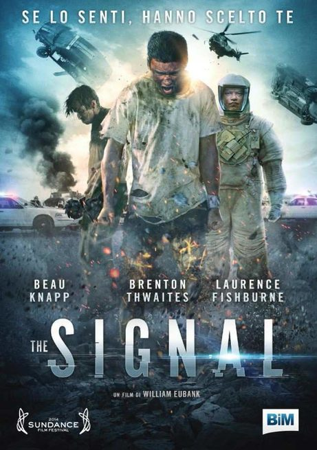
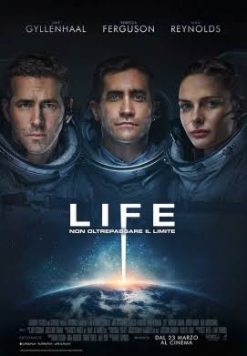
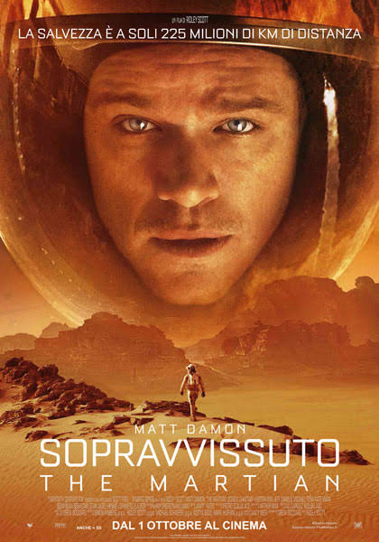
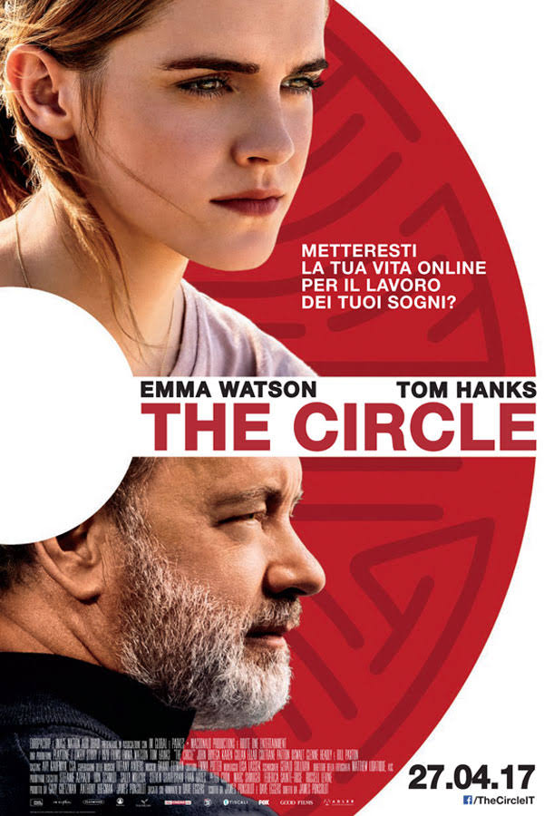
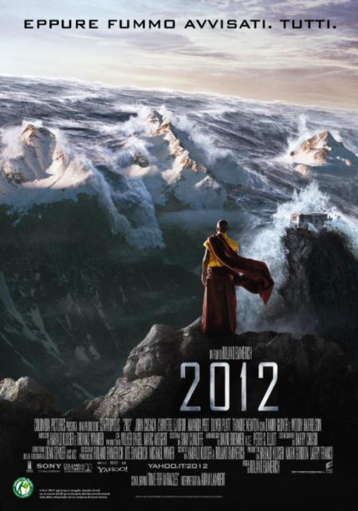

Penso che tra i film di fantascienza che io abbia mai visto, questo sia uno dei peggiori. E il che è anche strano se pensiamo allo spessore degli attori
presenti, ma inseriti in un film assolutamente non all'altezza. Ottimi gli effetti speciali, ma è uno di quei classici film confusionari, in cui dall'inizio alla fine
ti chiedi: "Perchè? Cosa è successo? Come è potuto accadere?". E la cosa più brutta è che nessuno ti darà spiegazioni, tanto meno il film stesso che, forse fatto con quell'intento
di lasciare libera interpretazione allo spettatore, finisce solo per rendersi insensato. Non saprete neanche inventarle a voi stessi le spiegazioni. Saprete solo dire: "è un film
sugli alieni, sugli esperimenti..." e non ne sarete neanche sicuri. Per gli amanti del genere può essere appena sufficiente grazie agli effetti, ma trama assolutamente non all'altezza, bella idea sviluppata orrendamente. Verdetto per questo film?
PASSO

Film su cui avevo tante aspettative, ma che risulta molto deludente. In pratica la storia di una nuova forma di vita scoperta nello
spazio, nel momento in cui però cercano di studiarla si rivela aggressiva e cerca di sterminare qualsiasi individuo sull'astronave. Questo porta
a un risultato simile ad Alien, una caccia all'uomo da parte del mostro. La tensione non manca ma è tutto troppo scontato e la fantascienza passa
in secondo piano per dare spazio a un thriller-horror mal riuscito. Trama troppo banale e spenta, con un mostro che ha come unica caratteristica l'aggressività.
Troppe aspettative create attorno alla pellicola per nulla di nuovo. Lo spessore degli attori e gli effetti speciali in parte salvano il salvabile.
Per guardare un film senza troppe pretese va anche bene, ma se dobbiamo considerarlo per il genere di cui fa parte...Verdetto per questo film?
PASSO

Dal punto di vista degli effetti speciali e del tema trattato, sicuramente uno dei migliori film di fantascienza degli ultimi anni.
Un Matt Damon fantastico permette a questa pellicola di ottenere ancor più valore. Il tema della sopravvivenza nello spazio, l'uomo che su Marte
cerca di creare l'autosufficienza necessaria a sopravvivere e la costante paura che possa accadere qualcosa da un momento all'altro, senza sapere
quando per il protagonista sarà possibile tornare sulla Terra rende tutto fantastico. Unica pecca del film? Il ritmo. Spesso ritmo molto lento e altre volte
non succede assolutamente niente. Vediamo semplicemente scene di vita quotidiana su Marte, come la coltivazione, l'andare in bagno e roba così. La vera azione si concentra tutta
nella parte finale del film, che nel mezzo si concentra sul lato psicologico del dover sopravvivere tutto quel tempo nello spazio. Verdetto per questo film?
GUARDO

Film di una noia mortale. Idea davvero molto interessante, ma in pratica diventa una specie di "Grande Fratello" fatto a film.
Vedremo le azioni quotidiane della protagonista, che però le condivide con tutto il mondo in diretta per far crescere il progetto principale.
Attori dello spessore di Tom Hanks e Emma Watson non riescono a rendere il film migliore, semplicemente perchè l'idea iniziale viene presa
e utilizzata molto male. Lo spettatore sprofonda nella noia più totale già dopo pochi minuti di film, essendo costretto a guardare un film
che concretamente di fantascientifico ha ben poco. Troppo spazio ai sentimenti della protagonista e troppo spazio ad azioni banali
ed abitudinarie. Verdetto per questo film?
PASSO

Il film basato sulla famosa profezia secondo la quale il mondo sarebbe dovuto finire nel 2012. Un film pieno d'azione e adrenalina,
con effetti speciali spettacolari e un John Cusack validissimo. Il film è avvolto da quella sensazione continua di smarrimento,
della consapevolezza di non essere più al sicuro da nessuna parte, di non avere una casa e della fine imminente di tutto. Sembra non esserci scampo
e lo spettatore fino alla fine vuole restare incollato allo schermo per sapere come andrà a finire il tutto. Inoltre tutte le catastrofi
ambientali presenti ci fanno ricordare quanto siamo estremamente piccoli di fronte alla potenza della natura. Verdetto per questo film?
GUARDO